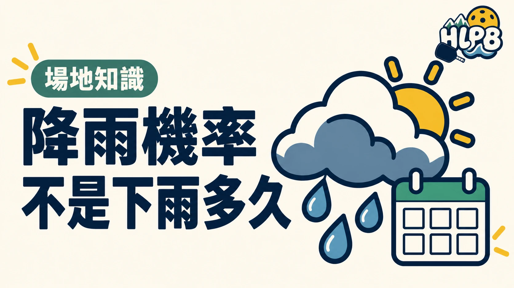

降雨機率表示特定地區、預報時段內發生降雨的可能性，不是那段時間會下多久。中央氣象署也指出，它與降雨強度、累積雨量沒有直接對應關係。
出門前，分開看四種資訊
| 資訊 | 能回答什麼 |
|---|---|
| 預報地區 | 是否對應球場所在鄉鎮 |
| 預報時段 | 是否涵蓋預計打球時間 |
| 降雨機率 | 該區該時段降雨的可能性 |
| 現場回報 | 地面目前有無積水或濕滑 |
只截一張百分比圖片，容易漏掉地點、時段與更新時間。看預報時應把這些條件一起保留；同一天不同時段的資訊，不能直接拿來替代整晚或整個下午的安排。
預報與現場，分別負責什麼？
預報可幫助安排備案，但不會告訴你每一處球場現在是否乾燥。雨停也不代表積水已退、地面已恢復適合移動的狀態。最後是否開打，仍需確認場地現況與開團者的通知。
花蓮球友可以怎麼安排？
HLPB 建議在出發前重新查看對應鄉鎮與時段，並和同場球友約定由誰發布是否照常的消息。需要找室內替代空間時，再核對預約與使用安排，不把天氣預報當成場地可使用的保證。
本文解釋預報用語，不提供今天或特定球場的天氣判斷。
延伸閱讀：花蓮下雨天可以去哪裡打匹克球？室內場地先看使用資格、匹克球場上安全：開打前先看這幾件事。
資料來源：中央氣象署氣象常識問答集。
內容更新：2026-10-20｜資料來源：中央氣象署
返回文章列表